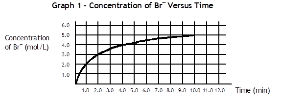
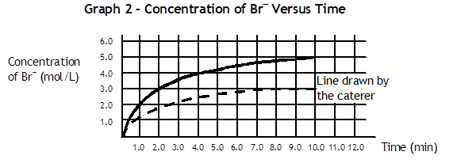

Question 17
Successful
catering companies present the food they prepare in an attractive manner.
A
decoration that one catering company uses is a glass container in the shape of
a tree trunk that changes from a dark brown colour to a lighter colour
throughout an event.
This colour change is accomplished through a chemical reaction
between bromine, Br2, reacting with phenol, C6H6O,
and oxygen, O2, to form bromine ion, Br–, hydrogen
ion, H+, and carbon dioxide gas, CO2. The balanced
chemical reaction for this process is shown below:
2 Br2(aq) + 2 C6H6O(aq) + 5 O2(g) ® 4 Br–(aq) + 12 H+(aq) + 6 CO2(g)
(Brown)
At the beginning of the reaction, the presence of
bromine, Br2, gives the dark brown colour.
The graph below
illustrates the concentration of the bromine ion, Br-(aq), as a
function of time.

|
a) What was the average rate
of formation of the product H+(aq), in moles per litre
per minute, between 4 and 10 minutes? Show all your
work. |
Question 17 (Cont’d)
The caterer would like the brown colour in the
display to last longer. She looked at Graph 1. She then drew a second line
on Graph 2, found below. She wants to know if this new rate would slow
down the colour change, making the display last longer.

|
b) Will the new rate slow
down the colour change? Justify your
answer. |